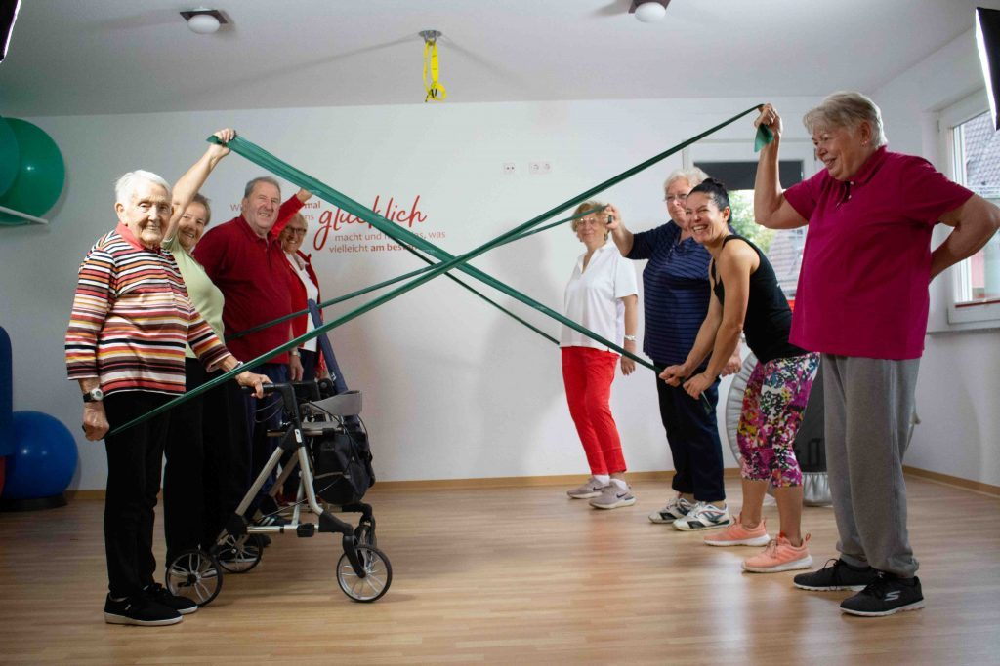
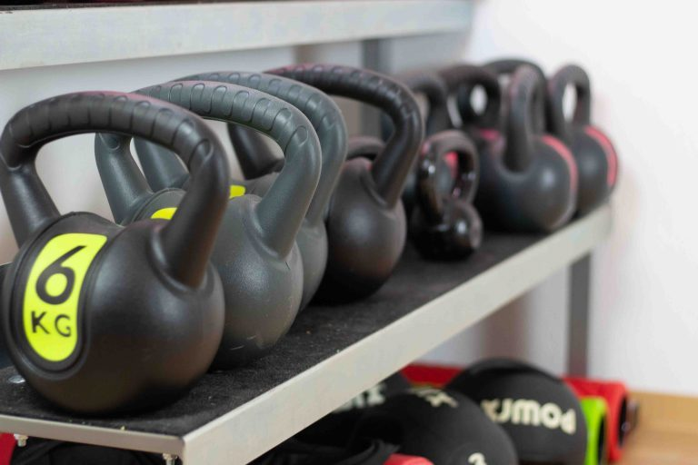

Mit Herz und Verstand
16 Frauen, deren Lachen durch die ganze Praxis schallt
Von Anfang 40 bis Mitte 60, mit über 35 Zusatzqualifikationen zusammen — und alle anhand ihres Lachens zu erkennen.

Was die Praxis Grosse besonders auszeichnet, ist ihr starkes Team: 16 Frauen von Anfang 40 bis Mitte 60, die mit viel Erfahrung und Leidenschaft alles dafür tun, damit es Ihnen besser geht.
Wer sind diese Frauen und was zeichnet sie aus? Zunächst einmal: ihr Lachen, denn jede Mitarbeiterin können Sie anhand ihres Lachens erkennen, das durch die Praxis schallt. Und dann: ihre Fachkompetenz und Fröhlichkeit, ihre Flexibilität und Fürsorge — für Sie und füreinander.
Die Inspiratorin
Michaela Grosses Weg zur eigenen Praxis
Staatsexamen zur Physiotherapeutin
Bereits nach ihrem erfolgreichen Abschluss zur staatlich anerkannten Physiotherapeutin stand für Michaela Grosse fest: Sie wollte sich selbstständig machen. Ihre Leidenschaft war und ist es, Menschen in guter Atmosphäre weiterzuhelfen und Stück für Stück mehr Lebensqualität und Gesundheit zu ermöglichen.
Das Startkapital: ein Fernsehauftritt
Ihr Bruder Markus hatte Michaela Grosse eingeladen, ihn als Zuschauerin in die TV-Show „Das goldene Ei“ zu begleiten. Dort wurde sie aus dem Publikum als Kandidatin ausgewählt — und gewann. Mit diesem Startkapital konnte sie sich den Traum von der Selbstständigkeit erfüllen.
Praxisgründung in der Ispringer Schulstraße
Michaela Grosse eröffnete ihre Praxis mit Mama Doris Krieg als Praxismanagerin. Die Praxis wuchs schnell, und sie absolvierte zahlreiche Fort- und Weiterbildungen, darunter Bobath-Therapie, Fußreflexzonen-Therapie und Krankengymnastik am Gerät (KGG).
Geburt der Töchter Ann-Christin und Luisa Sofie
Familie und Praxis wuchsen gemeinsam weiter.
Umzug in die Bahnhofstraße
Die Praxis bezieht die neuen, größeren Räume, in denen Sie heute behandelt werden.
Fernstudium zur Osteopathin M.Sc.
Ab 2009 absolvierte Michaela Grosse berufsbegleitend ein Fernstudium und schloss dieses 2014 nach erfolgreicher Bachelor- und Masterarbeit als Osteopathin M.Sc. an der DIU (Dresden International University) ab.
Therapie – Training – Prävention
Mit ihrer Praxis verfolgt Michaela Grosse dieses Konzept konsequent: Neben den klassischen Therapie-Leistungen bietet sie stetig mehr therapeutische Ergänzungsangebote und Kurse im Bereich Gesundheits-PLUS an. Therapie und Prävention sollen so zu einer Einheit verschmelzen.
„Verlässlichkeit, Verbundenheit und Vertrauen sind mir besonders wichtig. Mehrere meiner Therapeutinnen sind bereits seit rund 15 Jahren in meinem Team dabei — für mich ist mein Team auch ein Teil meiner Familie.“ Michaela Grosse, Praxisinhaberin

13 Therapeutinnen & Trainerinnen
Zugegeben, Sie werden wahrscheinlich noch nicht mit jedem Teammitglied Bekanntschaft gemacht haben. Mit Nicola Kunzmann, Tine Wild und Stefanie Karcher werden Sie aber vielleicht schon einmal am Telefon oder am Tresen einen kleinen Plausch gehalten haben.
Insgesamt haben die 13 Therapeutinnen und Trainerinnen über 35 zusätzliche Qualifikationen in Studiengängen, Ausbildungen und Weiterbildungen erworben — über Jahrzehnte hinweg. Silke Schorscke, Petra Kautz und Kristin Saager sind bereits seit über 15 Jahren im Team.
Unser Team
16 starke Frauen
Michaela Grosse, Nicola Kunzmann, Tine Wild, Renate Ölschläger, Petra Kautz, Elke Dammeier, Axana Bosch, Kristin Saager, Stefanie Karcher, Uli Ott, Moni Vögele, Käthe Hammermeister, Simone Knauss, Stefanie Erdrich, Nicole Bauer und Silke Schorscke.
Spezialisierungen
Wer Ihnen besonders gut weiterhelfen kann
Axana Bosch
Personal Training, Yoga & Pilates — mehrfach zertifizierte Fitness-Trainerin. Leitet außerdem die wöchentliche Team-Trainingseinheit.
Nicole Bauer
Yoga & Achtsamkeitskurse.
Kristin Saager & Elke Dammeier
Schwindel- und Vestibulartherapie, zertifiziert am Institut für vestibuläre Rehabilitationstherapie, Ludwigsburg.
Uli Ott
Medizinische Massage & Hot-Stone-Massage.
Renate Ölschläger
Autogenes Training & Entspannungstherapie (KPT).